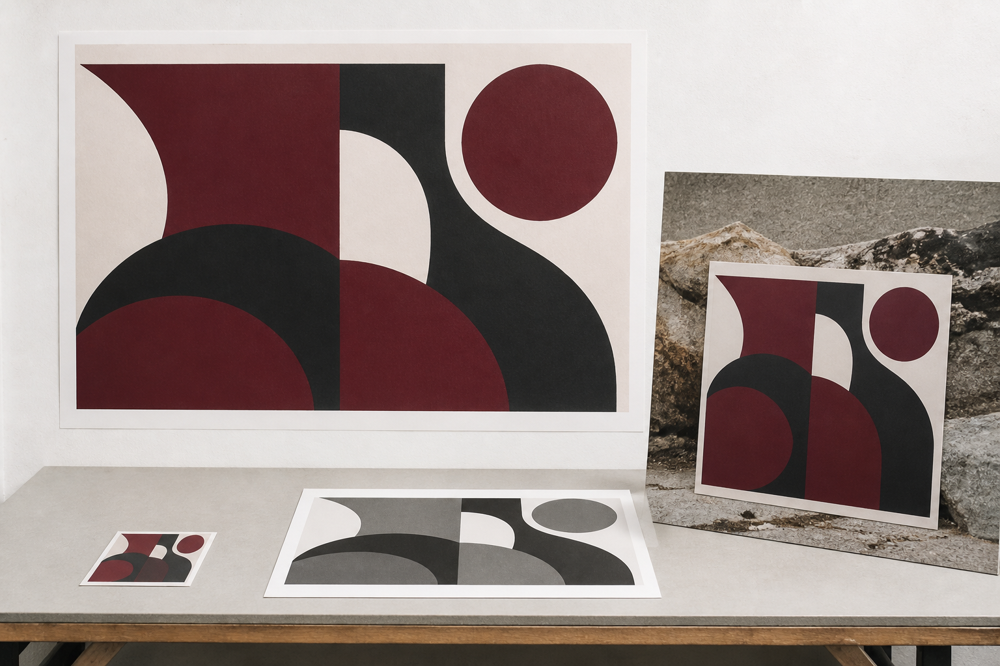
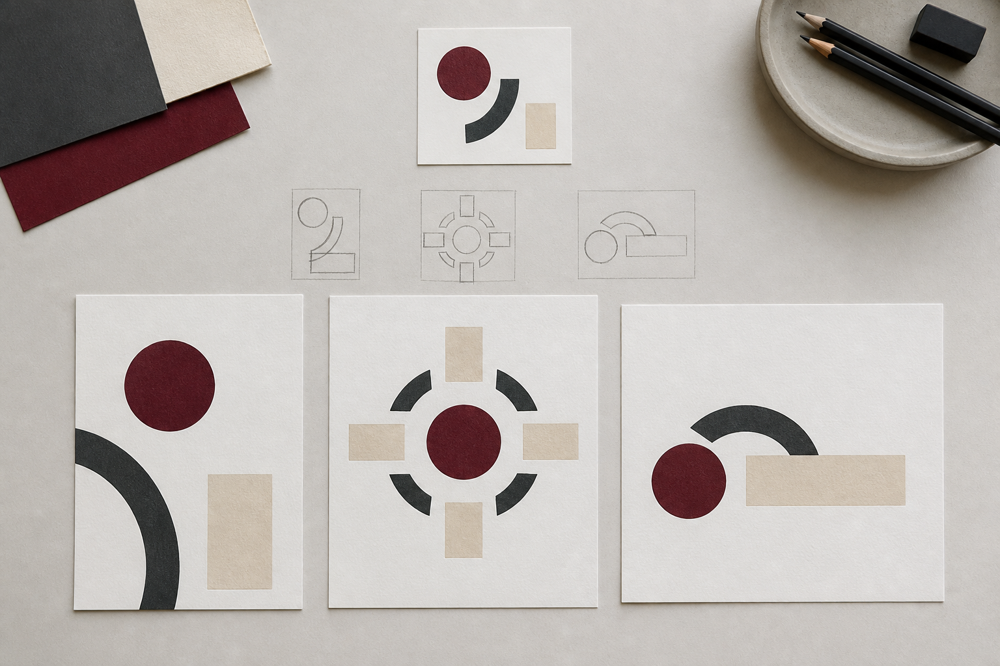
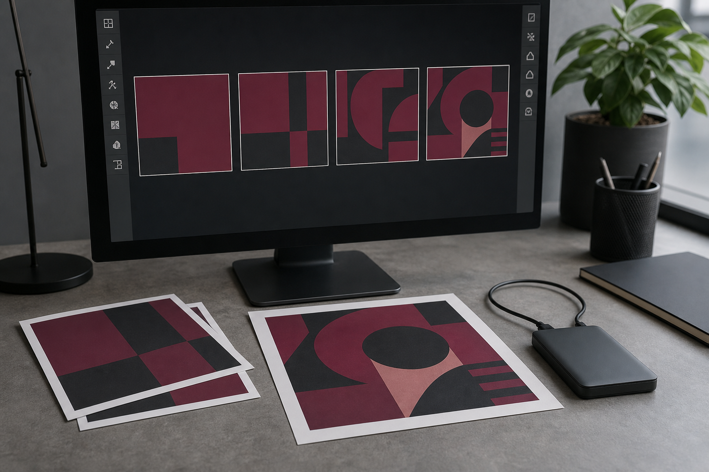

Classroom presentation
Student Negotiated Project slides
Use the module deck for short, continuous whole-class explanation, retrieval and exit evidence.
Module 4 of 4 · Term 4
Define an approved graphics problem, manage its development and evaluate the final communication through evidence.
Classroom presentation
Use the module deck for short, continuous whole-class explanation, retrieval and exit evidence.
Section M04S01
Students can use this theory when developing a proposal for a student-selected graphics project. They should define the graphics problem, audience, purpose, context, deliverables, criteria and constraints; check feasibility and ethical source use; and obtain teacher approval for the current brief, scope, evidence and any cultural or community engagement before moving into production. The historical teacher source provides learning context only, and the current 2026 school assessment schedule does not identify this module as a separate weighted formal task.
A student-negotiated graphics project begins with an idea, but an idea is not yet a brief. A strong brief turns an interest into a defined graphics problem by explaining what needs to be communicated, who it is for, what evidence will show success and what limits must be respected. The aim is to create enough direction to guide design decisions without locking yourself into one solution too early.
A topic names an area of interest, such as illustration, architecture, product design, engineering drawing, CAD or digital media. A brief goes further. It explains the communication problem, the intended audience, the purpose, the context and the required outcomes. For example, ‘I want to make a poster’ is a topic or starting idea. A brief would explain what the poster needs to communicate, who should understand it, where it might be viewed and what the final graphic needs to achieve.
The audience is the group the design is intended to reach. Audience decisions affect wording, image choices, complexity, scale, tone, hierarchy and presentation. Personal preference is not enough evidence that a design suits an audience. You need to ask whether the audience can understand the communication and whether the visual decisions are appropriate for the intended context.
The purpose explains what the graphics should do. It may be to inform, explain, persuade, identify, visualise, instruct or communicate a technical design. The purpose should be specific enough to guide decisions. Instead of writing, ‘The purpose is to look professional’, describe the actual communication job, such as helping an audience understand a product concept or communicating the organisation of a small building proposal.
Context describes where and how the communication will be encountered. A graphic intended for close viewing can support more detail than one that must be recognised quickly. A technical drawing and a promotional image may represent the same object but answer different questions. Thinking about context helps prevent you from selecting a format simply because it is the software or style you already know best.
Deliverables are the pieces of graphical work needed to demonstrate the project. They might include concept sketches, drawings, models, graphics, presentations or other evidence, depending on the approved project. Do not assume a particular software package, file type or presentation format. The current teacher-approved brief determines what evidence is required.
Success criteria describe observable qualities that will help you judge whether the solution works. Good criteria are linked to purpose and audience. A vague statement such as ‘It must look good’ is difficult to evaluate because different people may interpret it differently. A stronger criterion might state that the main message can be identified quickly, that different drawing views remain consistent, or that labels remain readable at the intended presentation size.
Criteria can be organised as required, preferred and optional. Required features are necessary for the approved solution to meet the brief. Preferred features would improve the design if they can be achieved within the available scope. Optional features can be explored if they add genuine value, but the project should not depend on them.
Constraints are the limits or conditions that shape the project. They may involve available time, appropriate tools, source information, ethical requirements, technical capability or the amount of work that can reasonably be completed. Constraints do not only restrict creativity. They help focus it. A project with no defined limits can become so broad that there is no clear way to finish or evaluate it.
Feasibility means checking whether the proposed project is realistic before production begins. Ask whether the required graphics can be developed within the available time and skills, whether the necessary source information can be obtained responsibly, and whether the project has a manageable number of deliverables. If the answer depends on several major assumptions or resources that are not yet available, the scope may need to be reduced.
Ethical planning belongs in the brief as well. Images, logos, drawings, photographs and other material found online are not automatically free to reuse. Record where sources come from, identify creators where possible and check whether reuse is permitted. Attribution does not automatically replace permission when permission is required.
Privacy also matters. Avoid using personal information, identifiable images or other material without a clear and appropriate reason and the necessary permission. If the project involves cultural material, cultural knowledge or community representation, cultural respect must be planned from the beginning rather than added later.
Where Aboriginal or Torres Strait Islander cultural knowledge, designs, stories, symbols, languages or other cultural expressions may be involved, Indigenous Cultural and Intellectual Property needs particular care. ICIP can concern the rights and interests connected to cultural heritage, traditional knowledge and cultural expressions. Do not assume that cultural material can be used because it is publicly visible. The relevant custodians, context and authority matter, and the teacher must approve the current brief, scope, evidence and any cultural or community engagement before production begins.
Teacher approval should happen while the project is still changeable, not after a finished product has been created. Approval allows the current brief, scope, evidence and proposed approach to be checked before significant production time is invested. It also provides an opportunity to identify issues involving source use, privacy, cultural material or unrealistic scope.
A good negotiated project is usually narrower than the first idea. Reducing scope is not failure. It often improves the quality of the work because more time can be spent developing, checking and refining the most important graphical communication rather than producing a large collection of unfinished elements.
Once the brief is approved, it becomes a decision-making tool. New ideas can be tested against the audience, purpose, deliverables, criteria and constraints rather than added simply because they seem interesting. The next stage is to generate and compare design ideas, organise the project into manageable steps and begin digital development with a clear reason for what you are producing.

Applied Learning Activity · about 25 minutes
Turn a topic into a focused graphics brief with observable criteria, realistic constraints and an approval-ready ethical source plan.
Do: Match each statement to the brief component it supplies. Identify the weak criterion. Write a compact brief outline and run the approval-readiness check.
Start or resume this activityFormative practice only — not formal assessment, folio submission, teacher-observed evidence or a competency decision.
Practice, not submission. Your responses stay in this browser unless you export them.
Resume this packageHigher-order capstone · apply
Use the order: problem, audience/purpose, deliverables, priorities, criteria, constraints, source checks and approval needs.
Section M04S02
Students can apply this theory after their current project brief and scope have been established. They should generate genuinely different ideas, compare them against audience, purpose, criteria and constraints, plan meaningful milestones and dependencies, and document digital development through useful versions, backups, source records, progress notes and decision evidence. Current teacher instructions control technical setup, access, naming conventions and submission requirements.
Once your project brief is established, the challenge changes from defining the problem to developing a solution. Strong project development is rarely a straight path from first idea to final product. Designers generate alternatives, compare them against the brief, plan manageable stages, create prototypes, test decisions and revise their work. Recording this process matters because sketches, versions, source records and decision notes provide evidence of how the final solution developed.
Divergent ideation means deliberately producing different possible responses before committing to one. The goal is not to create several polished versions of almost the same idea. It is to explore genuinely different approaches to the communication problem. One concept might rely on a strong diagram, another on a sequence of graphics, and another on a three-dimensional representation. The useful differences depend on your approved brief.
The first idea is not automatically the most original. It is often the idea that came to mind most easily because it is familiar. Exploring alternatives gives you something to compare and can reveal possibilities that were not obvious at the beginning.
Thumbnail sketches are small, rapid drawings used to explore composition, arrangement and major relationships without spending too much time on detail. For a moving or sequential communication, a storyboard may be more useful. For technical or spatial work, simple diagrams, freehand views or block models may provide better thinking evidence. The method should match the communication problem.
Annotations make early ideas more useful because they record reasoning. A note such as ‘move main label closer to diagram to strengthen connection’ explains more than a highly detailed sketch with no explanation. More detail does not automatically make a concept better. At the ideation stage, excessive detail can make you reluctant to abandon a weak direction simply because you have invested time in it.
After generating alternatives, begin convergent thinking: compare the ideas against the approved audience, purpose, success criteria and constraints. A simple decision matrix can help without turning design judgement into fake mathematics. List the important criteria and record evidence such as strong, uncertain or weak, followed by a short reason. The purpose is to make your reasoning visible, not to manufacture a score that automatically selects the winner.
A project management plan breaks the approved deliverables into milestones. A milestone marks meaningful progress, such as completing research, selecting a concept, producing a prototype, completing a major digital stage or conducting a review. Even a relatively small project benefits from a schedule because it helps reveal whether too much work has been left until the end.
Milestones also have dependencies. If a final drawing depends on an approved concept, detailed production should not race ahead while the concept is still unresolved. If several final graphics depend on the same source information, that research should be checked before all of those graphics are produced. Planning dependencies reduces the amount of work that needs to be rebuilt when an early decision changes.
A simple schedule should be useful rather than elaborate. Record the major stages, their order and enough progress information to recognise delay. A progress log can briefly record what was attempted, what changed, what problem appeared and what should happen next. This creates a more reliable record than trying to reconstruct the entire design process from memory at the end.
Project drift occurs when the work gradually moves away from the brief. You might keep adding features because the software makes them possible, expand one deliverable into several, or spend too much time perfecting an element that has little effect on the audience. When this happens, return to the required criteria. Reduce optional work first and protect the elements that directly support the project's purpose.
Changing direction is not automatically failure. Evidence may show that an early idea is unsuitable or technically unrealistic. A controlled change explains what was learned, what is changing and how the revised direction still responds to the brief. Continuing with a known weak idea simply to avoid changing course is usually poorer project management.
Select digital tools according to the communication job. Different tools may be useful for vector graphics, page layout, image editing, CAD, modelling, animation or other forms of communication. Software features should not decide the design. Start with what the audience needs to understand, then choose appropriate technology to produce that communication efficiently. Current teacher instructions control technical setup, access and any required naming conventions.
Digital development should be iterative. Create a workable prototype, inspect or test it, gather useful feedback, make a decision and revise. The prototype does not need every final detail. It needs enough development to test an important question. A layout prototype might test hierarchy and readability, while a CAD prototype might test whether forms and views communicate the intended geometry.
File management is part of project evidence. Saving over one file repeatedly may appear efficient, but it removes an easy way to return to an earlier stable version and makes development harder to demonstrate. Use a controlled version pathway that allows important stages to be identified. The exact naming convention should follow current teacher instructions.
Keep backups appropriate to the project and available systems, but do not assume automatic cloud history replaces your own development evidence. A service may record technical file history without explaining why a design decision changed. Your evidence should make important stages and reasoning understandable.
A decision log can be simple: record the issue, evidence considered, decision made and reason. A source or provenance record should identify where reference images, information, data or other source material came from. These records support responsible attribution and make it easier to check information later rather than searching again for a forgotten source.
Version control also makes experimentation safer. You can preserve a stable version before attempting a major change. If the new direction fails, you have a recoverable point rather than trying to undo a long sequence of edits. A useful pathway might progress from an early concept version to a tested prototype, a revised version and a final candidate, while keeping clear evidence of why significant changes occurred.
The aim of project management is not to create paperwork around the design. It is to reduce wasted effort and keep the work connected to its purpose. A strong development record shows that you considered alternatives, made reasoned decisions, managed scope, responded to problems and improved the communication through iteration. In the next section, this evidence becomes essential when you present the project, respond to feedback and evaluate how effectively the final solution meets its approved brief.


Applied Learning Activity · about 25 minutes
Use divergent ideas, meaningful milestones, dependencies and recoverable versions to keep digital development connected to the approved brief.
Do: Classify work as protect, simplify/defer, or investigate. Order the project stages by dependency. Record one scope-control decision and one stable recovery point.
Start or resume this activityFormative practice only — not formal assessment, folio submission, teacher-observed evidence or a competency decision.
Practice, not submission. Your responses stay in this browser unless you export them.
Resume this packageHigher-order capstone · evaluate
Organise the response as idea range, comparison, selected direction, milestone/dependency plan and digital evidence controls.
Section M04S03
Students can use this theory when preparing the final communication and evaluation of their teacher-approved negotiated project. They should select evidence that explains significant decisions and revisions, present the final solution clearly, seek specific feedback where appropriate, compare that feedback with criteria and technical checks, and evaluate strengths, limitations and possible improvements. The current teacher instructions control exact presentation, oral explanation, file release and submission conditions, and privacy, attribution and cultural permissions must be checked before material is shared.
A finished graphics project needs to be communicated as deliberately as it was designed. Presentation is not decoration added after the real work is complete. It is another graphical communication problem: you need to decide what your audience needs to see, what evidence best explains the development of the solution and how the final work should be organised so its purpose is clear. Evaluation then uses that evidence to judge how effectively the project responded to its approved brief.
A strong presentation has an audience and a purpose. The final product should receive appropriate emphasis, but selected development evidence can help explain how and why it reached that point. The aim is not to display every file, sketch or screenshot produced during the project. It is to select evidence that helps the audience understand important decisions, changes and outcomes.
Use visual hierarchy to control what the audience notices first. Important final graphics should not compete with unnecessary interface screenshots, decorative backgrounds or repeated information. Headings and captions can explain what evidence shows and why it matters. A caption such as ‘Second prototype’ identifies an image, but ‘Second prototype: increased contrast after the main label was difficult to distinguish’ explains its significance.
Before-and-after comparisons can provide particularly useful evidence when they show a meaningful revision. Place the earlier and revised versions in a relationship that makes the change easy to identify, then explain what evidence caused the change. This is more informative than displaying a long sequence of nearly identical screenshots.
More process screenshots do not prove better learning. A large quantity of files can actually hide the important evidence. Select examples that demonstrate significant stages such as alternative concepts, a tested prototype, a problem, a reasoned revision and the final response. The current teacher instructions control the exact presentation and any oral explanation.
An oral or written explanation should also move beyond description. Description tells the audience what is present: ‘The final graphic uses a large heading and three diagrams.’ Explanation connects features to their effect: ‘The large heading establishes the topic before the viewer moves through the three diagrams.’ Justification goes further by connecting the decision to the brief: ‘The heading was given visual priority because the intended audience needed to identify the purpose before interpreting the detailed graphics.’
Useful feedback begins with a useful question. Asking someone ‘Do you like it?’ mainly collects personal preference. Asking ‘Which information do you notice first, and what makes it stand out?’ can provide evidence about hierarchy. Asking ‘What do you think this symbol is communicating?’ can test whether a graphic is being interpreted as intended.
Feedback is not a vote in which the most popular opinion automatically wins. Different people may respond differently because they have different experiences or preferences. Compare feedback with the approved audience and success criteria before deciding whether a change is justified. A comment from one person can reveal a genuine issue, but it can also represent individual taste rather than evidence of a communication problem.
One useful approach is to triangulate evidence. Compare three kinds of information: your stated success criteria, relevant audience response and technical checks of the work. If all three point towards the same problem, the evidence for revision becomes stronger. If they conflict, investigate why rather than immediately changing the design.
For example, a viewer may prefer a smaller heading because they think it looks more elegant. If the criterion requires the main message to be identified quickly and other evidence shows that the existing heading creates clear hierarchy, personal preference alone may not justify the change. In contrast, if intended viewers repeatedly misunderstand a diagram and your own communication check identifies weak labelling, revision has a stronger evidence base.
Where time, project scope and teacher approval permit, final feedback can lead to another revision. Not every suggestion needs to be implemented. Record important feedback, decide whether it relates to the brief, and explain why you accepted, modified or rejected it.
Evaluation is a judgement about effectiveness supported by evidence. It is not simply a list of what happened during the project. Statements such as ‘First I researched, then I sketched, then I used software’ describe a process but do not evaluate its success.
A useful evaluation can use a claim-evidence-reasoning structure. The claim states a judgement about the project. The evidence identifies something observable from the final work, development process, criteria, feedback or technical checks. The reasoning explains why that evidence supports the judgement.
Evaluation should identify both strengths and limitations. Claiming that every part of the project is successful usually produces a weaker evaluation because it leaves little evidence of critical judgement. A limitation is not automatically a failure. It may identify where a design works less effectively, where evidence remains uncertain or what you would change if the project continued.
A polished render does not prove that the brief has been met. Appearance is only one form of evidence. A technically impressive image may still fail to communicate clearly to its audience, may not satisfy an important criterion, or may contain inconsistencies with related drawings. Evaluate the solution against the approved objectives rather than against how finished it appears.
Your final evaluation should therefore return to the original brief. Which criteria were met strongly? Which were only partly achieved? What development decisions made the largest improvement? What challenges affected the solution, and how were they addressed? What evidence supports those conclusions? If the project continued, what specific next improvement would provide the greatest benefit?
Removing a person's name does not automatically make material safe to share. Images, locations, voices, distinctive details or other information may still identify someone, and copyright or cultural responsibilities remain even when personal names are absent. Before releasing project material beyond your working environment, check privacy, attribution, cultural permissions, file release and submission requirements with your teacher.
At the end of the project, return to the complete course evidence set rather than judging your learning from one polished final image. Your sketches, research, source records, drawings, models, prototypes, revisions, feedback, technical checks and final communication can show different parts of your development as a graphics student. Use the evidence that is relevant to the current teacher-approved course requirements, and keep every claim within what the evidence actually demonstrates.
Applied Learning Activity · about 25 minutes
Select meaningful presentation evidence, ask criterion-linked feedback questions and build evaluation through claim, evidence and reasoning.
Do: Choose the more useful feedback question in each pair. Order claim, evidence and reasoning. Write an evaluation paragraph that includes a strength, limitation and next improvement.
Start or resume this activityFormative practice only — not formal assessment, folio submission, teacher-observed evidence or a competency decision.
Practice, not submission. Your responses stay in this browser unless you export them.
Resume this packageHigher-order capstone · evaluate
Build the response from audience/purpose, evidence selection, feedback test, triangulated judgement, limitation and release check.
End-of-module review
Completion means the questions were checked and the capstone has text saved. It does not mean submission or a formal mark.